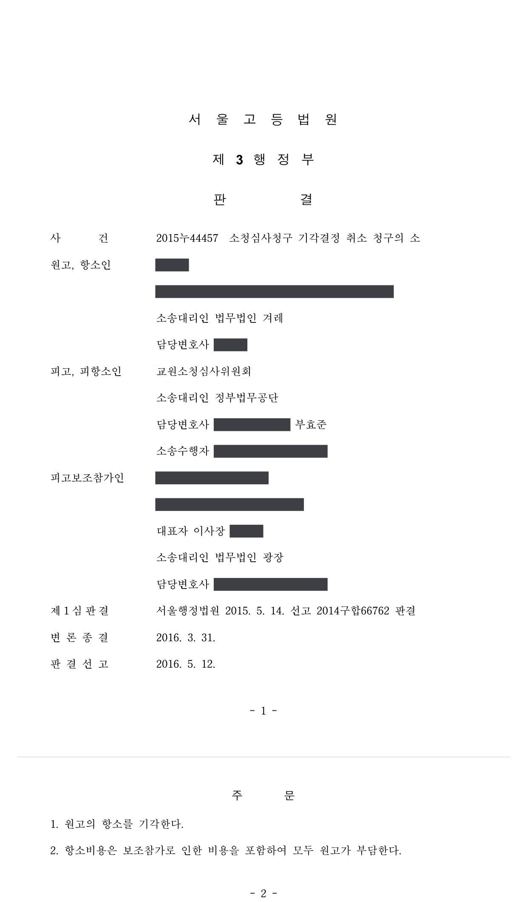

대학병원 교수 전보처분 관련 교원소청 결정 취소소송 (1·2심)
서울행정법원 2014구합66762 · 서울고등법원 2015누44457 · 담당변호사 부효준
판결문


사건의 요지
진료 적정성 문제로 연구전담교원으로 전보된 의과대학 교수가 교원소청심사 결정의 취소를 구한 사건으로, 전보의 정당한 이유와 절차적 요건, 이중의 불이익처분 해당 여부가 다투어졌습니다.
사건의 주요 내용
의과대학 교수이자 학교법인이 운영하는 대학병원의 전속의사(임상교원)로 근무하던 원고는, 동료 의사와 전공의들이 진료의 적정성에 문제를 제기하자 학교법인이 적정진료평가위원회와 인사위원회를 거쳐 2009년 10월부터 진료정지처분을 하였습니다. 원고가 그 무효확인을 구한 민사소송에서는 '처분 당시에는 정당한 인사권의 범위 안에 있었으나 2010년 12월 이후로는 부당하게 장기간 대기발령 상태를 유지한 것'이라는 이유로 일부 승소 판결이 확정되었습니다.
학교법인은 2013년 3월 원고를 임상교원에서 연구전담교원으로 전보하였고, 원고는 교원소청심사위원회에 소청심사를 청구하였으나 2014년 5월 받아들여지지 않았습니다. 원고는 위원회를 피고로 하여 결정의 취소를 구하는 소송을 제기하였고, 1심에서 청구가 받아들여지지 않은 뒤 항소하였으나 2016년 5월 항소도 받아들여지지 않았습니다. 부효준 변호사는 1심과 항소심에서 피고 소청심사위원회를 대리하였습니다.
쟁점
- 뒤에 일부 무효로 확인된 진료정지처분에 이어 연구전담교원으로 전보한 것이 이중의 불이익처분인지
- 진료기록 감정에서 과실이 발견되지 않은 임상교원을 동료·전공의의 문제 제기와 병원 내 심의를 근거로 연구전담교원으로 전보할 업무상 필요성이 있는지, 그로 인한 생활상 불이익이 그보다 큰지
- 전보 전에 성실한 협의절차를 거치지 않았다는 사정만으로 전보가 권리남용으로 무효가 되는지
원고의 주장
- 진료정지처분이 2010년 12월 이후 무효라는 판결이 확정되었음에도 학교법인은 원고를 임상교원으로 복직시키지 않고 같은 이유로 연구전담교원으로 전보하였으므로, 이는 이중의 불이익처분으로 위법하다.
- 원고는 진료상 과실로 의료사고를 일으킨 바 없어 전보의 업무상 필요성이 없고, 병원이 연구중심병원 선정에서 제외되어 연구전담교원을 둘 필요도 없어졌으며, 전보로 진료수당 등 급여가 약 350만 원 정도 줄고 승급에서 배제되는 등 불이익이 업무상 필요성보다 훨씬 크다.
- 학교법인은 전보 전에 신의칙상 요구되는 협의절차를 거치지 않았으므로 전보에는 절차상 하자가 있다.
부효준 변호사의 주장
- 진료정지처분은 환자 진료만을 잠정적으로 정지시킨 대기발령과 유사한 처분이고 전보는 업무상 필요에 따라 보직을 변경하는 확정적인 인사조치이므로, 서로 별개의 처분이어서 이중의 불이익처분이 아니라고 반박하였습니다.
- 진료과 과장과 전공의들이 진료 및 수술 방법의 문제점을 지적하고 적정진료평가위원회도 부적절하다고 평가한 이상, 의료사고를 예방하고 전공의 교육을 정상화하기 위하여 원고를 임상교원에서 배제할 업무상 필요성이 크며, 진료기록 감정에서 과실이 발견되지 않았다는 것만으로 진료에 문제가 없었다고 볼 수 없다고 주장하였습니다.
- 연구전담교원은 진료수당 대신 의학연구비와 고정성과급을 더 받아 경제적 불이익이 크지 않고 근무장소도 같으며, 학교법인은 전보 전에 원고의 의사를 물었으나 원고가 거부 의견서를 제출하여 협의가 어려워진 것이므로 절차상 하자도 없다고 주장하였습니다.
법원의 판단
1심 법원은 진료정지처분이 원고의 근로 내용을 잠정적으로 변경한 것에 불과하여 대기발령과 유사한 처분인 반면, 전보는 동일 직급 안에서 보직을 변경하는 확정적인 인사조치이므로 서로 별개의 인사조치이고, 진료정지처분 뒤에 전보를 하였더라도 이중의 불이익처분이 아니라고 판단하였습니다. 협의절차에 관하여는 학교법인이 전보 전 원고의 의사를 물었으나 원고가 거부하였고, 설령 성실한 협의가 없었더라도 그 사정만으로 전보가 권리남용으로 무효가 되지는 않는다는 대법원 판례(2009. 3. 12. 선고 2007두22306 판결)를 들어 배척하였습니다.
전보의 정당한 이유에 관하여 1심과 항소심은, 진료과 과장과 전공의들이 진료·수술 방법의 문제점을 지적하고 적정진료평가위원회와 인사위원회가 이를 심의한 경위에 비추어 이들이 원고를 음해하였다고 볼 정황이 없고, 진료기록 감정에서 과실이 발견되지 않았더라도 진료기록이 사후에 보완·수정될 수 있다는 점 등을 고려하면 적정진료평가위원회의 판단이 잘못되었다고 단정할 수 없다고 보았습니다. 임상교원의 진료는 단순히 의료상 과실이 없는 것을 넘어 전공의를 가르칠 수 있을 만큼 정확해야 하는데 전공의들조차 문제를 지적한 이상 임상교원의 자질이 부족하다고 볼 여지가 충분하다고 하였습니다.
또한 학교법인이 연구중심병원 선정 여부와 상관없이 인사규정을 개정하여 연구전담교원 제도를 두고 실제 4명을 운영하고 있으며, 연구전담교원은 진료수당 대신 연구비와 성과급을 더 받아 경제적 불이익이 크지 않고 근무장소도 같으며 승급 배제를 인정할 증거가 없다고 보아, 업무상 필요성이 큰 반면 생활상 불이익은 크지 않다고 판단하였습니다. 1심은 원고의 청구를, 항소심은 원고의 항소를 각각 받아들이지 않았습니다.
위 인정사실과 앞서 든 증거들 및 변론 전체의 취지로부터 알 수 있는 다음과 같은 사정들, 즉 ① 참가인은 이 사건 병원 진료과 과장을 비롯하여 소속 전공의들까지 원고 진료의 문제점을 지적하고 적정진료평가위원회도 원고의 진료정지를 건의하자 원고의 진료에 과실이 있는지를 조사하여 그 조사결과에 따라 원고에게 징계나 전보 등의 인사조치를 하기 전에 이 사건 진료정지처분을 한 것인 점, ② 이 사건 진료정지처분은 원고의 환자 진료만을 정지시키는 것일 뿐, 대학교수나 임상교원이라는 신분상 지위에 변동을 초래한 것은 아닌 점 등에 비추어 보면, 이 사건 진료정지처분은 원고의 근로 종류나 내용을 확정적으로 변경하는 것이 아니라 그 근로 내용을 잠정적으로 변경하는 것에 불과하므로 대기발령과 유사한 처분이라고 봄이 타당하다. 이에 반하여 이 사건 전보는 사용자가 업무상 필요에 따라 동일한 직급 내에서 근로자의 보직을 변경하여 일정한 기간 동안 새로운 직무에 종사하도록 하는 확정적인 인사조치이다. 따라서 이 사건 전보는 이 사건 진료정지처분과 별개의 인사조치이므로 참가인이 이 사건 진료정지처분 후 이 사건 전보를 하였더라도 이중의 불이익처분이라고 볼 수 없다.
서울행정법원 2014구합66762 판결 이유 '2. 나. 2) 이 사건 전보가 이중의 불이익처분인지 여부'(항소심이 그대로 인용한 부분)
원고는 임상교원으로서 환자 진료뿐만 아니라 전공의들을 교육하는 역할을 담당하고 있으므로 원고의 진료행위는 단순히 의료상 과실이 없는 것만으로는 부족하고 전공의들에게 가르침을 줄 수 있을 정도로 빈틈이 없고 정확하여야 한다. 그런데 원고의 환자들에 대한 진료행위나 진료 과정에서 한 언행에 대하여 동료 의사뿐만 아니라 원고로부터 교육을 받는 전공의들조차도 문제점을 지적하고 있고 심지어 원고가 진료행위를 중지해야 한다고까지 말하고 있다. 따라서 설령 원고의 위 환자들에 대한 진료행위에 의료사고나 의료과오에 해당할 정도의 의료상 과실이 없다고 하더라도 원고는 임상교원으로서 갖추어야 할 자질이 부족한 것으로 볼 여지가 충분하다.
서울고등법원 2015누44457 판결 이유 '2. 제1심 판결과 달라지는 부분 — 3) 이 사건 전보에 정당한 이유가 있는지 여부 가)'
설령 참가인이 원고와 성실한 협의절차를 거치지 않았더라도 이러한 사정만으로는 이 사건 전보가 권리남용에 해당하여 당연히 무효가 된다고 볼 수 없다(대법원 2009. 3. 12. 선고 2007두22306 판결 참조). 따라서 원고의 이 부분 주장은 이유 없다.
서울행정법원 2014구합66762 판결 이유 '2. 나. 4) 신의칙상 요구되는 협의절차를 거쳤는지 여부'(항소심이 그대로 인용한 부분)
※ 판결 이유 가운데 이 사건의 판단 기준이 된 부분을 그대로 옮긴 것으로, 당사자 이름 등은 가렸습니다.
이 사건이 보여 주는 것
대학병원 임상교원을 연구전담교원으로 옮기는 전보는 보직 변경에 해당하는 확정적인 인사조치로서, 그 전에 있었던 진료정지(대기발령에 준하는 잠정적 조치)와는 별개로 판단됩니다. 앞선 조치가 뒤늦게 일부 무효로 확인되었다는 사정만으로 후속 전보가 이중의 불이익처분이 되는 것은 아닙니다.
전보의 정당성은 업무상 필요성과 근로자의 생활상 불이익을 비교하여 판단하는데, 임상교원은 환자 진료뿐 아니라 전공의 교육을 담당하므로 동료 의사·전공의의 평가와 병원 내 심의 절차가 중요한 근거가 됩니다. 급여 구성이 바뀌어도 총액 감소가 크지 않고 근무장소가 같다면 불이익이 크지 않다고 보며, 협의절차가 미흡하였다는 사정만으로 전보가 무효가 되지는 않습니다.
비슷한 처분을 받으셨다면
행정처분은 처분이 있음을 안 날부터 90일 이내에 행정심판이나 취소소송으로 다투어야 하고, 기간이 지나면 돌이킬 수 없는 처분은 집행정지를 서둘러야 합니다. 처분서를 받은 날짜부터 확인해 드립니다.